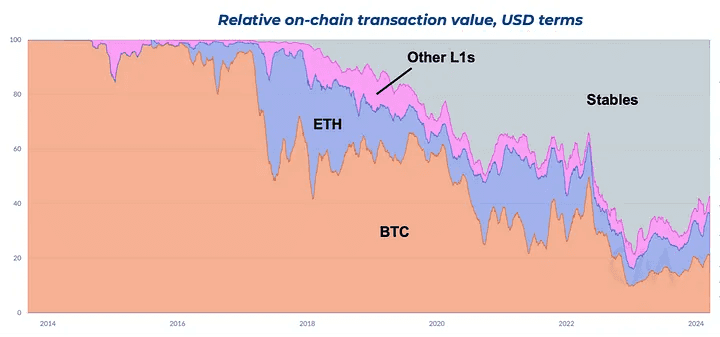

Stable-coins
-
What does it look like when 10% of global economic money is stablecoins, and when credit intermediation moves from fractional reserve lending to onchain credit markets built from the ground up on safer, digital cash instruments (e.g. stables), and opens up credit and debt to the long tail of supply and demand in the same way that Amazon did for commerce and AdWords did for advertising? All of this is achievable over the next 10+ years. The time goes by fast, but when you zoom out and look at what has been accomplished and how that sets us up for the future, it’s hard not to be insanely optimistic right now. -
Stable Coins are ‘crypto like’ instruments which are ‘pegged’ at a 1:1ratio with nationally issued Fiat currencies. In fact they usually correspond to units of privately issued debt underwritten by a variety of different assets. This is (depending on the issuing company’s model)a far moreriskyunit of money than the nominal currency that they represent, but they offer significant utility. They allow the user to self custody the cryptographic bearer instrument representing the money themselves, as with blockchain. This may afford the user less friction in that they can transmit the instrument through the newer financial rails which are emerging. Once again, this is likely a product most useful to emergingmarkets,those living under oppressive regimes, currencies suffering from highinflation,and countries who rely on the dollar as their currency, and within digitally native metaverse applications. These are enormous global uses though. The use in the west is prominently for ‘traders’ on exchanges at this time. /par The caveat of such products is that such ‘units’ of money can be frozen by the issuer, and they are subject to the third party risk of the issuer defaulting on the underlying instrument, instantly wiping out the value.
-
Klages-Mundt et al. wrote a paper in 2020, which explains the details ofthe different mechanisms and risks.
-
The following text paraphrases Spencer noon of on-chain analytics company “OurNetwork”, who provides an usefulsummary of the paper.
-
There are two major classes of stablecoins:
- Custodial: entrusted by off-chain collateral assets like fiat dollars that sit in a bank. Requires trust in third party.
- Non-custodial (aka decentralized): fully on-chain and backed by smart contracts & economics. No trusted parties.
-
In custodial stablecoins, custodians hold a combination of assets(currencies, bonds, commodities, etc.) off-chain, allowing issuers(possibly the same entity) to offer digital tokens of an reserve asset.The top 2 custodial stablecoins today are USDT and USDC. There are 3types of custodial stablecoins.
- Reserve Fund: 100% reserve ratio. Each stablecoin is backed by a unit of the reserve asset held by the custodian. A useful example of this the USDF banking consortium.
- Fractional Reserve Fund: The stablecoin is backed by a mix of both reserve assets and other capital assets.
- Central Bank Digital Currency (CBDC): A digital form of central bank money that is widely available to the general public. CBDCs are in their nascency as today only 9 countries/territories have launched them, many of them small.
-
Custodial stablecoins have three major risks:
- Counterparty Risk (fraud, theft, govt seizure, etc.)
- Censorship Risk (operations blocked by regulators, etc.)
- Economic Risk (off-chain assets go down in value)
-
Each can result in the stablecoin value going to zero.
-
Stablecoins and national security: Learning the lessons of Eurodollars | Brookings
-
They are collectively likely to outstrip VISA this year
-
Over 1/3 Made a Purchase in Stablecoins in Latin America, Says Latest MasterCard New Payments Index 2022: Reporting on Fintech,
-
Crypto, and Blockchain Activity in Africahttps://bitcoinke.io/2022/07/latin-america-in-mastercard-new-payments-index-2022/
-
According to the latest MasterCard New Payments Index 2022, over one third of people in Latin America made a purchase using
-
stablecoins in the past year. * https://bitcoinmagazine.com/legal/u-s-treasury-introduces-cbdc-digital-dollar-working-group rbi monetary museum: India’s e-rupee unpopular as central banks push digital currency

Stripe Acquires Bridge
- Stripe Acquisition
- On October 22nd, fintech giant Stripe acquired stablecoin infrastructure firm Bridge for $1.1 billion, marking the largest acquisition in crypto history and Stripe’s most significant purchase to date.
- Bridge provides business-facing software that enables companies to accept stablecoin payments, enhancing Stripe’s capabilities in the stablecoin payments sector.
- At the time of acquisition, Bridge was last valued at $200 million during their Series A funding, representing a substantial markup and a significant exit for founders and investors.
- Stripe’s Strategic Intent
- The acquisition underscores Stripe’s commitment to stablecoins as the future of payments, signaling their intention to double down on stablecoin infrastructure.
- Patrick Collison, CEO of Stripe, stated, “Stable coins are room temperature superconductors for financial services. Thanks to stable coins, businesses around the world will benefit from significant speed, coverage, and cost improvements in the coming years.”\r\n
- Stripe aims to build the world’s best stablecoin infrastructure, integrating multiple stablecoins and partnering with firms like Paxos for backend infrastructure.
- Bridge’s platform facilitates stablecoin payments across 70 countries, with impressive early adoption metrics reported by Stripe.
- The integration of Bridge enhances Stripe’s ability to provide instant, global, dollar-based payment rails, reducing crypto complexity for businesses.
- Positive Endorsements
- Simon Taylor of fintech Brain Fruit praised the acquisition, likening it to an “Instagram-like all-time great acquisition” that addresses long-term challenges for Stripe.
- Overdraft’s head of macro at Lightspeed Ventures highlighted the shift from crypto being price-centric to focusing on business value.
- Jeremy Black, principal at fintech firm Kinvey, noted that Stripe’s $1 billion investment communicates a strong market signal to customers and partners, discouraging competitors.
- Rob Boadock, general partner at Dragonfly Capital, emphasized that the acquisition broadens Stripe’s business from merchant dependence to establishing its own global payment network.
- Jacob Horn, co-founder of LER 2 Zora, indicated that Bridge and Stripe’s collaboration will enable any app to have stablecoin on-ramps and off-ramps similar to Coinbase, with enhanced regional support.
- Chia Wang of Alliance Dow suggested that the acquisition signals to venture capitalists that stablecoin startups have clearer paths to significant exits, potentially leading to increased funding and entrepreneurial activity in the stablecoin space.
- Nick Carter of Castle Island predicted that the Bridge acquisition would “turbocharge” the stablecoin market, aligning with broader industry enthusiasm.
- Stablecoins in Financial Infrastructure
- Stablecoins are increasingly recognized as essential to future financial infrastructure, especially in regions with limited access to traditional banking.
- The acquisition by Stripe reflects a broader industry acknowledgment of stablecoins’ role in facilitating seamless, global transactions.\r\n
- Market Trends and Adoption
- Stablecoins have maintained a steady ascent, becoming integral to various financial services beyond speculative trading, including payments, remittances, and decentralized finance (DeFi).
- Institutional interest in stablecoins is growing, driven by their potential to enhance payment speed, reduce costs, and provide stable value storage.
- As stablecoins become more embedded in the financial system, regulatory frameworks will likely evolve to address associated risks and ensure compliance.
- The ongoing collaboration between traditional financial institutions and blockchain-based firms like Stripe and Bridge suggests a converging future for fintech and crypto sectors.
By the numbers
- It’s worth taking a look at these tokens individually, to get a feel forthe trade-offs, and figure out how they might be useful for us in our proposed metaverse applications. It’s important to know that these tokenised dollars and/or other currencies are issued on top of the public blockchains we have been detailing throughout. Which tokens areon what blockchains is constantly evolving, so it’s not really worth enumerating specifics. In a metaverse application it would be necessary to manage both the underlying public blockchain and the stablecoin issued on top of it, making the interaction with the global financial system perversely more not less complex. In the following list of a fewof the major coins, the first hyperlink is the whitepaper if it’s available.
-
USDC is a dollar and Euro backed coin issued by a consortium of major players in the space, most notably Circle, and Coinbase. It’s has a better transparency record than tether but is still not backed 1:1 by actual dollars in reserve. It may or may not be a fractional reserve asset. It’s well positioned to take advantage of regulatory changes in the USA, and seems to be quietly lobbying to be the choice of a government endorsed digital dollar, at least a significant part of a central bank digital currency initiative. It’s too early to tell how this will work out, but it has substantial ‘legacy finance backing’. It is the only stablecoin to increase slightly in value (depegging upward) in the wake of the UST implosion. This ‘flight to quality’ shows the advantage of the work that CENTRE put into regulatory compliance. It runs on Ethereum, Algorand, Solana, Stellar, Tron, Hedera, Avalanche and Flow blockchains. At this time USDC may be under speculative attack by Chinese exchange Binance, in favour of their own offering BUSD, and is losing market share. Payment provider Stripe supports USDC as of 2024.
-
Circle has received a major boost as the only stablecoin allowed in the EU.
-
Binance USD is the dollar equivalent token from global crypto exchange behemoth Binance. It’s released in partnership with Paxos, who have a strong record for compliance, and transparency. Paxos also offer USDP. Both these stablecoins claim to be 100% backed by dollars, or US treasuries. They are regulated under the more restrictive New York state financial services and have a monthly attestation report.
-
MakerDAO Dai is an Ethereum based stablecoin and one of the older offerings. It’s been ‘governed’ by a DAO since 2014. ‘Excess collateral’, above the value of the dai-dollars to be minted, is voted upon before being committed to the systems’ cryptographic ‘vaults’ as a backing for the currency. These dai can then be used across the Ethereum network. Despite the problems with DAOs, and the problems with Ethereum, DAI is well liked by its community of users and has a healthy billion dollars of issuance. They may be dangerously exposed to the new crackdown in the USA, and there is internal talk of pro-actively abandoning DAI altogether.
-
TrueUSD claims to be fully backed by US dollars, held in escrow. It runs on the Ethereum blockchain. They have attestation reports available on demand and claim fully insured deposits. It’s not quite that simple in that a portion of the backing is ‘cash equivalents’.
-
Gemini GUSD claim reserves are “held and maintained at State Street Bank and Trust Company and within a money market fund managed by Goldman Sachs Asset Management, invested only in U.S. Treasury obligations.” which seems pretty clear.
-
TerraUSD (UST) was a more experimental stable coin, and one of a set of currency representations within the network. It worked in concert with the LUNA token on the Cosmos blockchain in order to keep it’s dollar stability. It was not backed in the same way as the other tokens, instead relying on an arbitrage mechanism using LUNA. In essence the protocol paid users to destroy LUNA and mint UST when the price was above one dollar, and vice versa. This theoretically maintained the dollar peg. There was much concern that this model of ‘algorithmic stable coin’ is unstable.clements2021built The developers of the Terra tried to address this concern by buying enormous amounts of Bitcoin, which they quickly had to employ to address UST drifting downward from 50B of capital. It will now likely act as a cautionary tale to other institutions considering Bitcoin as a ‘reserve asset’. An earlier version of this book highlighted the specific variation of the risk which quickly manifested.
-
Tether
-
Tether is the largest of the stablecoins, with some 9B was redeemed directly for dollars in a few days following the UST crash (more on this later). They are shortly to launch a GBP version for the UK. It’s an important technology for this metaverse conversation because of intersections with Bitcoin through the Lightning network. Tether might actually provide everything needed. It’s only as safe as the trust invested in the central issuer though, and the leadership and history of the company are questionable. It’s notable and somewhat ironic that it’s perhaps better and more transparently backed than most banks, and probably all novel fiat fintech products. We can employ the asset through the Taro technology described earlier but we would rather use something with higher regulatory assurances.
-
Paolo Ardoino, Tether’s chief technology officer, said in a podcast episode with The Block that USDT is increasingly used for value transfers, making up about 40% of all token usage, compared to 60% of crypto trading.
- 40% of USDT is now real world use cases, with Tron emerging as the blockchain of the moment.
- Tether as a company makes billions of dollars of profit per year and has global adoption and network effect. The company has around 20 employees. They will likely remain pre-eminent in the synthetic dollar market.
- The USA is positioning to exclude USDT within it’s borders, by capping such assets at $10B for National security reasons.
- Tether is potentially the natural inheritor of the global Eurodollar system.